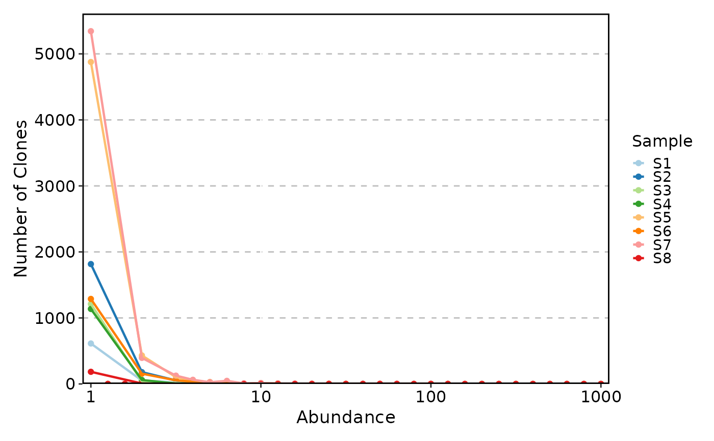
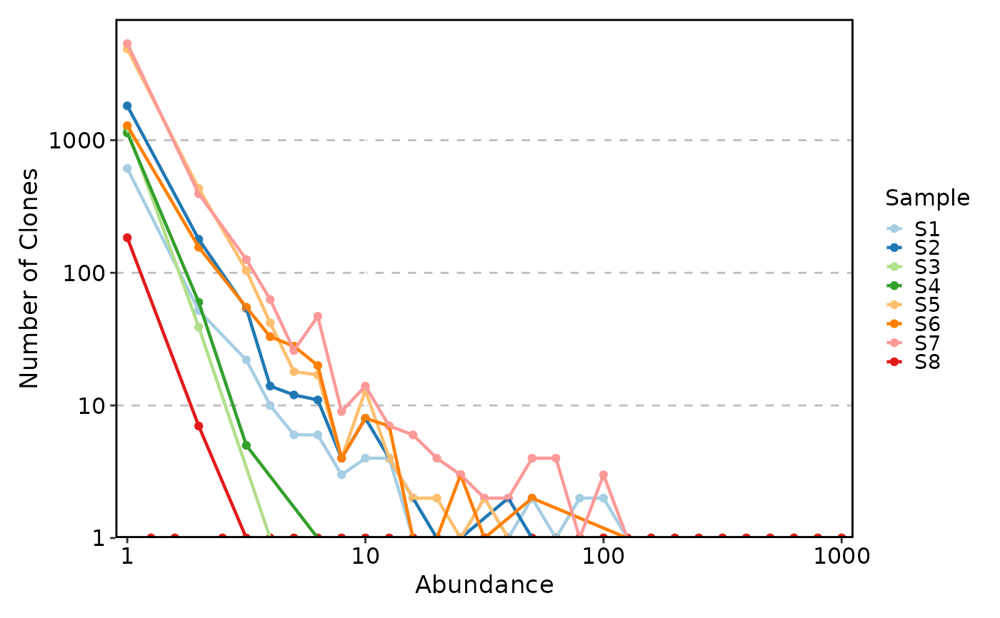
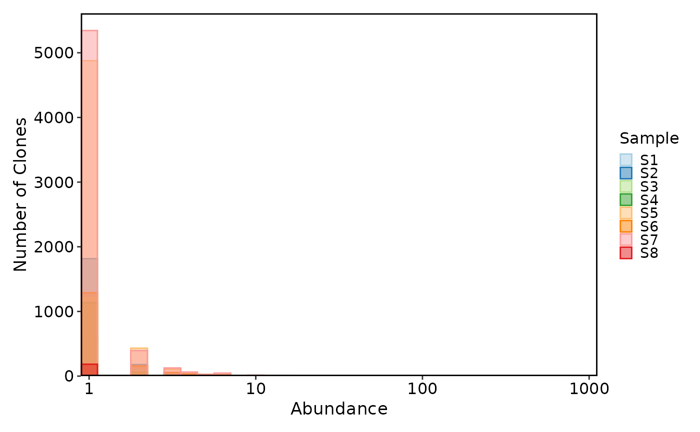
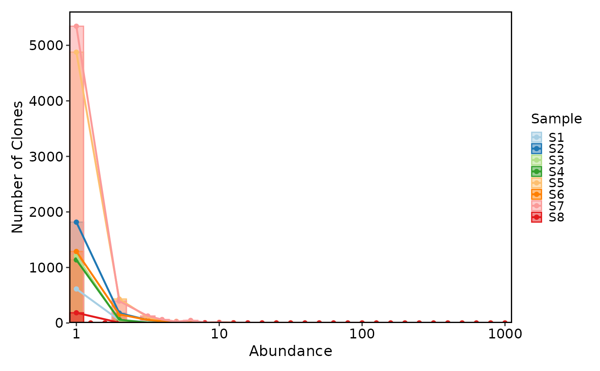
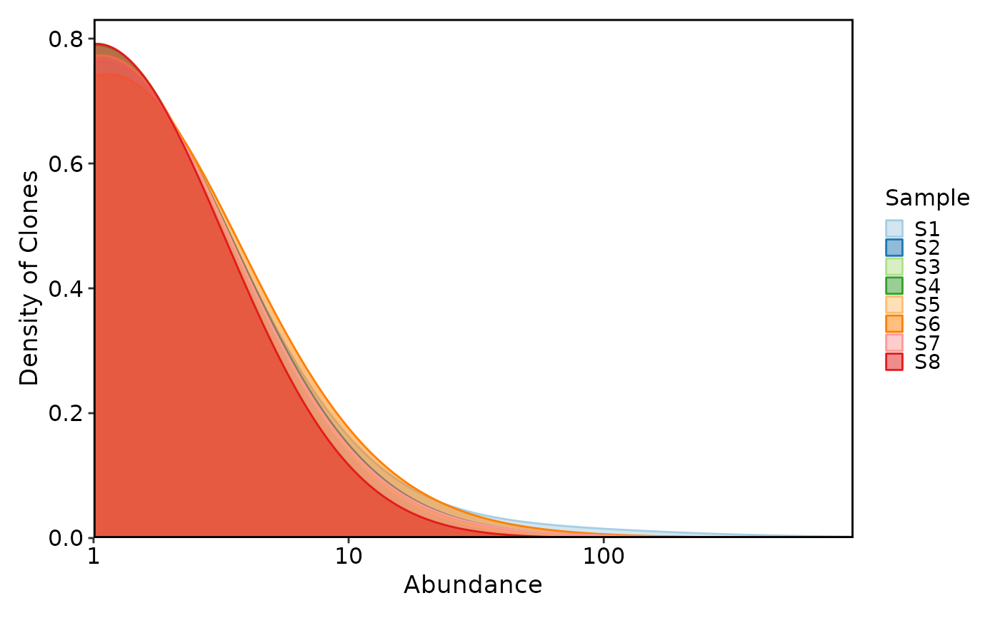

Plot the count or density of the clones at different abundance levels.
Usage
ClonalAbundancePlot(
data,
clone_call = "aa",
chain = "both",
xtrans = "log10",
ytrans = "identity",
plot_type = c("trend", "histogram", "density"),
binwidth = 0.1,
trend_skip_zero = TRUE,
bw = 0.5,
group_by = "Sample",
group_by_sep = "_",
facet_by = NULL,
split_by = NULL,
order = list(),
xlab = "Abundance",
ylab = NULL,
theme_args = list(),
...
)Arguments
- data
The product of scRepertoire::combineTCR, scRepertoire::combineTCR, or scRepertoire::combineExpression.
- clone_call
How to call the clone - VDJC gene (gene), CDR3 nucleotide (nt), CDR3 amino acid (aa), VDJC gene + CDR3 nucleotide (strict) or a custom variable in the data
- chain
indicate if both or a specific chain should be used - e.g. "both", "TRA", "TRG", "IGH", "IGL"
- xtrans
The transformation to apply to the x-axis. Default is "log10".
- ytrans
The transformation to apply to the y-axis. Default is "identity".
- plot_type
The type of plot to use. Default is "trend". Possible values are "trend", "histogram" and "density".
- binwidth
The binwidth for the histogram plot. Default is 0.1.
- trend_skip_zero
Whether to skip the zero values in the trend line. Default is TRUE.
- bw
The smoothing bandwidth to be used for density plots. Default is 0.5.
- group_by
The column name in the meta data to group the cells. Default: "Sample"
- group_by_sep
The separator to use when combining the group_by columns. Default: "_"
- facet_by
The column name in the meta data to facet the plots. Default: NULL
- split_by
The column name in the meta data to split the plots. Default: NULL
- order
The order of the x-axis items or groups. Default is an empty list. It should be a list of values. The names are the column names, and the values are the order.
- xlab
The x-axis label. Default is "Abundance".
- ylab
The y-axis label. Default is "Number of Clones" for trend and histogram, and "Density of Clones" for density.
- theme_args
The theme arguments to be passed to the plot function.
- ...
Other arguments passed to the specific plot function.
For
trendplot, seeplotthis::Histogram().For
histogramplot, seeplotthis::Histogram().For
densityplot, seeplotthis::DensityPlot().
Examples
set.seed(8525)
data(contig_list, package = "scRepertoire")
data <- scRepertoire::combineTCR(contig_list)
data <- scRepertoire::addVariable(data,
variable.name = "Type",
variables = sample(c("B", "L"), 8, replace = TRUE)
)
data <- scRepertoire::addVariable(data,
variable.name = "Sex",
variables = sample(c("M", "F"), 8, replace = TRUE)
)
ClonalAbundancePlot(data)
#> Warning: Removed 104 rows containing missing values or values outside the scale range
#> (`geom_line()`).

ClonalAbundancePlot(data, ytrans = "log10")
#> Warning: log-10 transformation introduced infinite values.
#> Warning: Removed 104 rows containing missing values or values outside the scale range
#> (`geom_line()`).

ClonalAbundancePlot(data, plot_type = "histogram")

ClonalAbundancePlot(data, plot_type = "histogram", add_trend = TRUE, trend_skip_zero = TRUE)
#> Warning: Removed 104 rows containing missing values or values outside the scale range
#> (`geom_line()`).

ClonalAbundancePlot(data, plot_type = "density")
